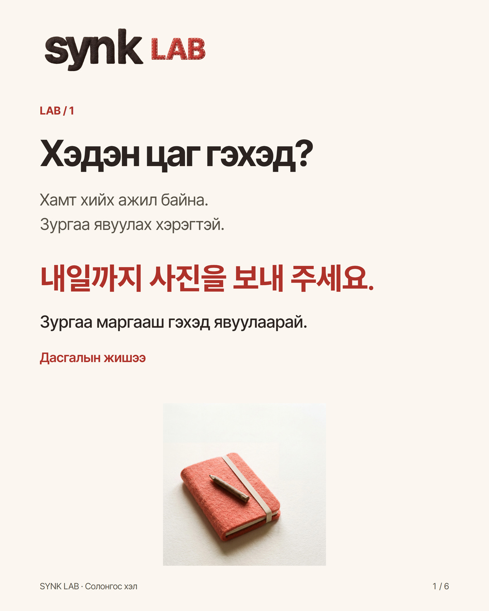
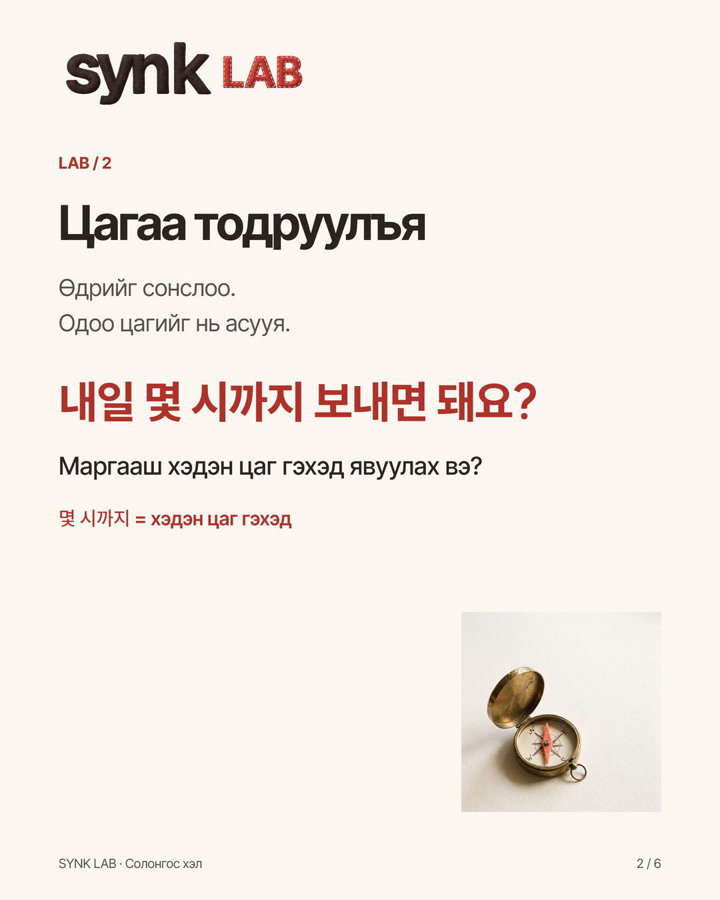
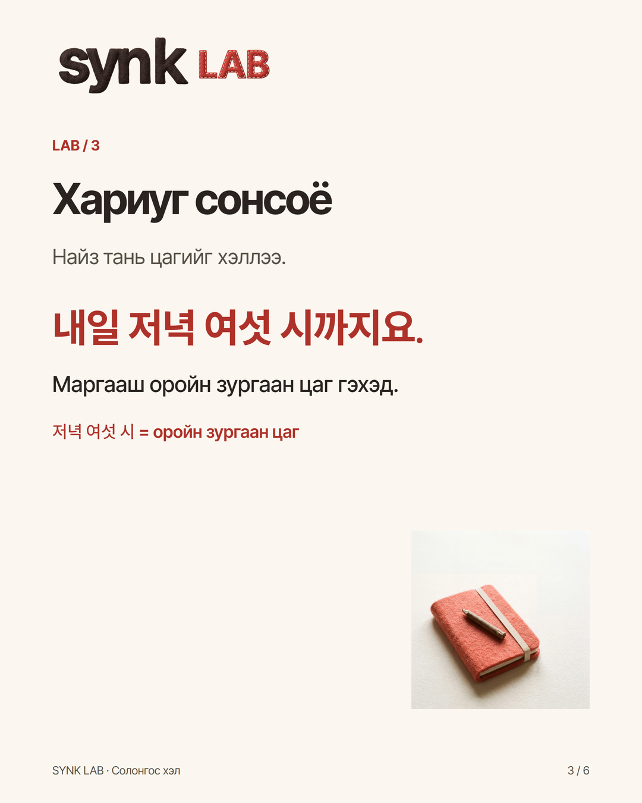
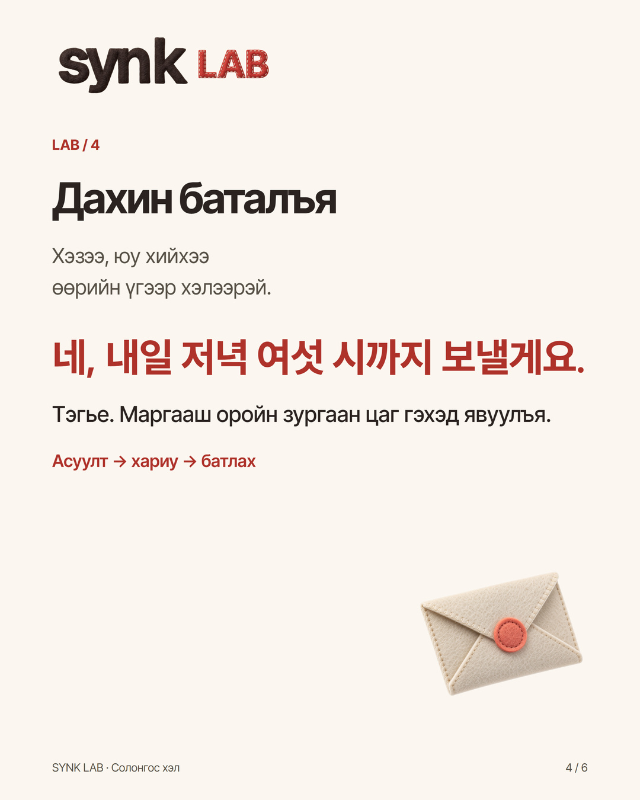
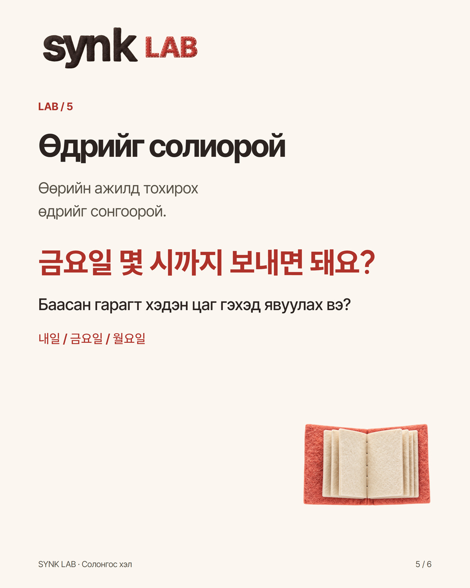
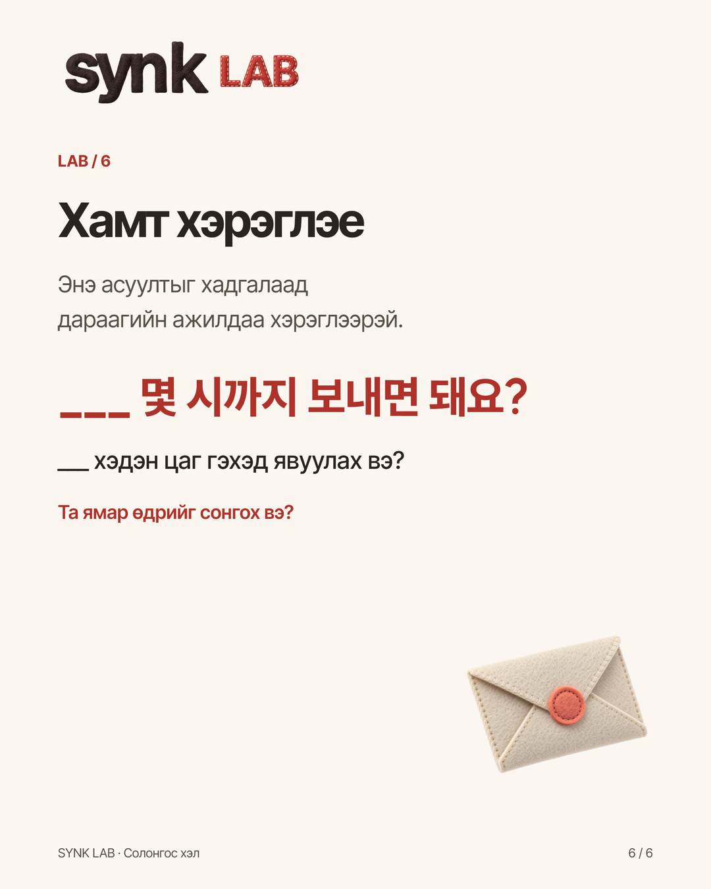

Instagram · @synk.mn
내일까지? 몇 시까지?
다시 묻고 뜻을 확인하는 한국어 · 한몽 자료와 직접 작성
새 원고 · 사람 원어민 감수 전 · 실제 SNS 미게시
게시할 문안
Найзтайгаа хамт ажил хийхдээ, дуусгах цагаа тодруулж асуугаарай.
Дасгалын жишээ: хамт хийх ажилд хэрэгтэй зургаа явуулах гэж байна.
1. «내일까지 사진을 보내 주세요.»
Зургаа маргааш гэхэд явуулаарай.
Өдрийг мэдлээ. Одоо цагийг нь асууж болно.
2. «내일 몇 시까지 보내면 돼요?»
Маргааш хэдэн цаг гэхэд явуулах вэ?
3. «내일 저녁 여섯 시까지요.»
Маргааш оройн зургаан цаг гэхэд.
4. «네, 내일 저녁 여섯 시까지 보낼게요.»
Тэгье. Маргааш оройн зургаан цаг гэхэд явуулъя.
Өөрийн өгүүлбэр:
«___ 몇 시까지 보내면 돼요?»
내일 = маргааш
금요일 = баасан гарагт
월요일 = даваа гарагт
Зөвхөн өдрийг солиод хэлж үзээрэй. Хариуг сонсоод, тохирсон цагийг давтаж хэлээрэй.
Энэ өгүүлбэрийг хадгалаад дараагийн ажилдаа хэрэглээрэй. Дасгалыг өөртөө хийж болно; сэтгэгдэл бичих шаардлагагүй.
Та ямар өдрийг сонгох вэ?
업로드할 카드





